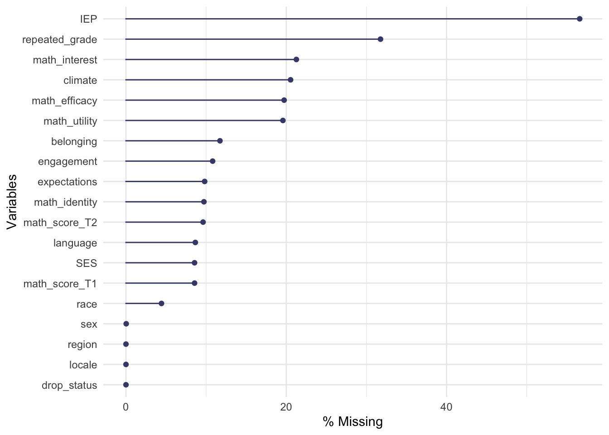
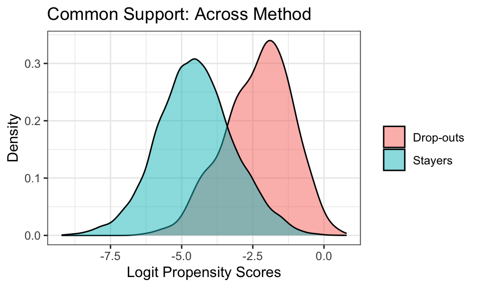
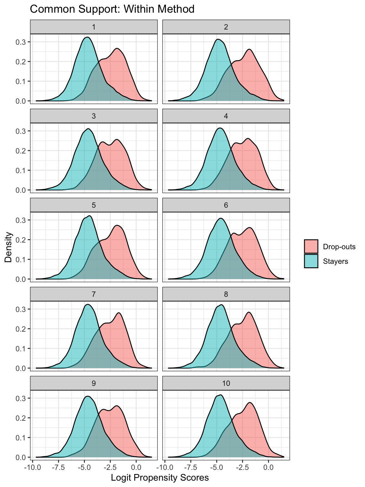

library(tidyverse)
library(mice)
library(estimatr)
library(broom)
library(naniar)
library(knitr)In this post, I walk through steps of running propensity score analysis when there is missingness in the covariate data. Particularly, I look at multiple imputation and ways to condition on propensity scores estimated with imputed data. The code builds on my earlier post where I go over different ways to handle missing data when conducting propensity score analysis. I go through tidyeval way of dealing with multiply imputed data. Please see MatchThem package for functions that work with multiply imputed data and propensity scores (Pishgar & Greifer, 2020).
Hill (2004) and Mitra & Reiter (2016) examined two distinct ways to condition on the propensity scores estimated on multiply imputed data:
Multiple Imputation Across (MI Across)
This approach involves creating m imputed datasets and then estimating propensity scores within each of the datasets and then averaging each unit’s m propensity scores across the m datasets (Hill, 2004). Stratification, matching or IPW can be implemented using these averaged propensity scores (Hill, 2004). Outcome models that include covariates will need to use the weights or strata derived from the averaged propensity scores and the m sets of covariate values. The weighted regression estimates will then need to be pooled.
Multiple Imputation Within (MI Within)
This approach involves creating m imputed datasets and then estimating propensity scores within each of the datasets (Hill, 2004). Instead of averaging the propensity scores across the datasets, this method entails conditioning on the propensity scores within the datasets and running the outcome analyses within each dataset (Hill, 2004). The separate regression estimates have to be pooled.
Read in the data
Below, I show how to implement the Across and Within methods to estimate the average treatment effect on the treated (ATT). The data that I use here is from High School and Beyond (HSB) longitudinal study used by Rosenbaum (1986) to analyze the effect of dropping out of high school on later math achievement for students who dropped out. For the purpose of this example, I am going to assume a simple random sample.
hsls_dat <- read_csv("https://raw.githubusercontent.com/meghapsimatrix/datasets/master/causal/HSLS09_incomplete.csv") %>%
mutate_if(is.character, as.factor) %>%
mutate_at(vars(repeated_grade, IEP), as.factor) %>%
select(-working_T3) # an outcome we don't care aboutBelow, using gg_miss_var from the naniar package, I visualize the percent of data that are missing for each of the variables (Tierney, Cook, McBain, & Fay, 2020). The treatment variable, drop_status has no missing data. The outcome variable, math_score_T2, however, does have around 10% missing data. I am going to impute the outcome data and the covariate data in this example. Please see Hill (2004) for a discussion on dealing with missing outcome data.
gg_miss_var(hsls_dat, show_pct = TRUE)
Multiple imputation using mice
Here, I impute the data using the mice package and set the number of imputations and iterations to 10 each (van Buuren & Groothuis-Oudshoorn, 2011). Then, I save the result as an RData file that I can load later. For the imputation method, I let mice run the default methods: predicitive mean matching for continuous variables, Bayesian logistic regression for binary variables and Bayesian polytomous regression for multinomial variables. For more information on different methods for imputation, please see Chapter 6.2 from Flexible Modeling of Missing Data (van Buuren, 2018).
system.time(temp_data <- mice(hsls_dat, m = 10, maxit = 10, seed = 20200516))
save(temp_data, file = "temp_data.RData")Imputed data
I load the saved RData file and then extract the data that contains each of the 10 imputed data stacked.
load("temp_data.RData")
imp_dat <- complete(temp_data, action = "long")Estimating propensity scores
Below I create a dataset with only the covariates and use the paste() function to create a propensity score model equation. For the sake of this example, I only focus on including main effects of the covariates in the propensity score model.
covs <- imp_dat %>%
select(sex:climate, math_score_T1)
equation_ps <- paste("drop_status ~ ", paste(names(covs), collapse = " + "))
equation_ps[1] "drop_status ~ sex + race + language + repeated_grade + IEP + locale + region + SES + math_identity + math_utility + math_efficacy + math_interest + engagement + belonging + expectations + climate + math_score_T1"Here, I create a function estimate_ps() that takes in an equation and a dataset and runs logistic regression using glm(). The function then adds the logit of propensity scores and the propensity scores as columns in the data.
I then group the imp_dat by the imputation number and then run the estimate_ps() function on each of the imputed dataset using the do() function from dplyr (Wickham et al., 2019).
estimate_ps <- function(equation, dat){
ps_model <- glm(as.formula(equation), family = binomial, data = dat)
dat <- dat %>%
mutate(ps_logit = predict(ps_model, type = "link"),
ps = predict(ps_model, type = "response"))
return(dat)
}
imp_dat_ps <- imp_dat %>%
group_by(.imp) %>%
do(estimate_ps(equation_ps, .)) %>%
ungroup()Estimating ATT IPW weights
Below I estimate ATT weights using the across and within methods. For the Across method, I use the average of the propensity scores across the imputed datasets to calculate weights. For the within method, I use the the propensity scores estimated within each imputed dataset to calculate weights.
The code below groups the imputed data by .id which is an identifier denoting each case. For each case, I summarize the mean of the propensity scores across the 10 imputed dataset and add that mean propensity score as a variable ps_across in the data. Then, I estimate the ATT weights using the averaged propensity scores for the Across method and the original propensity scores for the Within method.
imp_dat_ps <- imp_dat_ps %>%
group_by(.id) %>%
mutate(ps_across = mean(ps)) %>%
ungroup() %>%
mutate(att_wt_across = drop_status + (1 - drop_status) * ps_across/(1 - ps_across),
att_wt_within = drop_status + (1 - drop_status) * ps/(1 - ps))
imp_dat_ps %>%
select(.imp, ps, ps_across, att_wt_across, att_wt_within)# A tibble: 214,020 × 5
.imp ps ps_across att_wt_across att_wt_within
<int> <dbl> <dbl> <dbl> <dbl>
1 1 0.00339 0.00330 0.00331 0.00340
2 1 0.00989 0.0102 0.0103 0.00999
3 1 0.00135 0.00131 0.00132 0.00135
4 1 0.0119 0.0114 0.0115 0.0120
5 1 0.00222 0.00246 0.00246 0.00222
6 1 0.00289 0.00294 0.00295 0.00290
7 1 0.0113 0.0101 0.0102 0.0114
8 1 0.00347 0.00375 0.00377 0.00348
9 1 0.00327 0.00276 0.00276 0.00328
10 1 0.000667 0.000633 0.000633 0.000667
# ℹ 214,010 more rowsChecking common support
Across
The propensity scores are averaged across the imputations when using the Across method. Thus, I create a density plot showing the distribution of the logit of the propensity scores from one of the imputations (all of the imputations will have the same distribution). The distribution of the propensity scores for drop-outs overlaps with that for the stayers satisfying the common support assumption.
imp_dat_ps %>%
mutate(drop = if_else(drop_status == 1, "Drop-outs", "Stayers"),
ps_across_logit = log(ps_across/ (1 - ps_across))) %>%
filter(.imp == 1) %>%
ggplot(aes(x = ps_across_logit, fill = drop)) +
geom_density(alpha = .5) +
labs(x = "Logit Propensity Scores", y = "Density", fill = "") +
ggtitle("Common Support: Across Method") +
theme_bw()
Within
The propensity scores estimated for each imputation are used when using the Within method. Below, I create density plots showing distributions of the logit of the propensity scores faceted by the imputation. The common support assumption seems to be satisfied across all the imputations.
In other datasets, the common support assumption may be violated. In such a case, certain cases might need to be trimmed from the analysis so there is enough overlap of the distributions.
imp_dat_ps %>%
mutate(drop = if_else(drop_status == 1, "Drop-outs", "Stayers")) %>%
ggplot(aes(x = ps_logit, fill = drop)) +
geom_density(alpha = .5) +
labs(x = "Logit Propensity Scores", y = "Density", fill = "") +
ggtitle("Common Support: Within Method") +
facet_wrap(~ .imp, ncol = 2) +
theme_bw()
Checking balance
At this point, we would check balance. Please see the cobalt package for functions on checking balance on multiply imputed data. I am going to skip this step for now.
Estimating ATT
Below I create a function to estimate the ATT. The function takes in an equation, a dataset, and weights as arguments. Then, it runs a model using lm_robust() from the estimatr package (Blair, Cooper, Coppock, Humphreys, & Sonnet, 2020). The standard errors of the regression coefficients are estimated using HC2 type sandwich errors. It then cleans up the results using tidy() from broom (Robinson & Hayes, 2020).
estimate_ATT <- function(equation, dat, wts){
wts <- dat %>% pull({{wts}})
model <- lm_robust(as.formula(equation), data = dat, weights = wts)
res <- model %>%
tidy() %>%
filter(term == "drop_status") %>%
select(term, estimate, se = std.error, ci_low = conf.low, ci_high = conf.high, df = df)
return(res)
}I set up an equation regressing the outcome variable, math_score_T2 on drop status and on the main effects of all the covariates. Then, I run the estimate_ATT() function on each imputed data using group_by() and do(). Note that the weights are different for the Across and Within methods.
equation_ancova <- paste("math_score_T2 ~ drop_status + ", paste(names(covs), collapse = " + "))
equation_ancova[1] "math_score_T2 ~ drop_status + sex + race + language + repeated_grade + IEP + locale + region + SES + math_identity + math_utility + math_efficacy + math_interest + engagement + belonging + expectations + climate + math_score_T1"across_res <- imp_dat_ps %>%
group_by(.imp) %>%
do(estimate_ATT(equation = equation_ancova, dat = ., wts = att_wt_across)) %>%
ungroup()
within_res <- imp_dat_ps %>%
group_by(.imp) %>%
do(estimate_ATT(equation = equation_ancova, dat = ., wts = att_wt_within)) %>%
ungroup()Pooling the results
Here, I create a function called calc_pooled() using formula by Barnard & Rubin (1999) to pool the results across the imputations. The mice package has the pool() function to do the same thing but we would need to convert the imputed data back to mids object type and I just wanted to skip all that :D
calc_pooled <- function(dat, est, se, df){
dat <- dat %>%
mutate(est = dat %>% pull({{est}}),
se = dat %>%pull({{se}}),
df = dat %>% pull({{df}}))
pooled <- dat %>%
summarize(m = n(),
B = var(est), # between imputation var
beta_bar = mean(est), # mean of estimated reg coeffs
V_bar = mean(se^2), # mean of var - hc corrected within imp var
eta_bar = mean(df)) %>% # mean of df
mutate(
V_total = V_bar + B * (m + 1) / m, #between and within var est
gamma = ((m + 1) / m) * B / V_total,
df_m = (m - 1) / gamma^2,
df_obs = eta_bar * (eta_bar + 1) * (1 - gamma) / (eta_bar + 3),
df = 1 / (1 / df_m + 1 / df_obs),
# output
se = sqrt(V_total),
ci_lower = beta_bar - se * qt(0.975, df = df),
ci_upper = beta_bar + se * qt(0.975, df = df)) %>%
select(est = beta_bar, se, df, ci_lower, ci_upper)
return(pooled)
}Below I use the calc_pooled() function to pool the results for each of the methods.
Across
across_pooled <- calc_pooled(dat = across_res, est = estimate, se = se, df = df)
across_pooled %>%
kable(digits = 3)| est | se | df | ci_lower | ci_upper |
|---|---|---|---|---|
| -0.335 | 0.038 | 93.772 | -0.411 | -0.26 |
Within
within_pooled <- calc_pooled(dat = within_res, est = estimate, se = se, df = df)
within_pooled %>%
kable(digits = 3)| est | se | df | ci_lower | ci_upper |
|---|---|---|---|---|
| -0.356 | 0.041 | 50.002 | -0.438 | -0.273 |
Interpretation
Across
For students who dropped out, if they drop out of high school, they are expected to score -0.335, 95% CI[-0.411, -0.26] lower on math score in 2012 compared to if they stayed.
Within
For students who dropped out, if they drop out of high school, they are expected to score -0.356, 95% CI[-0.438, -0.273] lower on math score in 2012 compared to if they stayed.
Comparing the methods
The estimates, se and df are different for the results from the two different methods. So which one is better? It’s not possible to say based on analysis on one dataset. Hill (2004) and Mitra & Reiter (2016) conducted simulation studies comparing the two methods. Hill (2004) found that MI Across performed best in terms of absolute bias and mean squared error compared to all the other methods examined in the study. Mitra & Reiter (2016) found that MI Across resulted in greater bias reduction in the estimation of ATT compared to MI Within. For details of the simulation studies please see the articles.
References
Barnard, J., & Rubin, D. B. (1999). Small-Sample Degrees of Freedom with Multiple Imputation. 9.
Blair, G., Cooper, J., Coppock, A., Humphreys, M., & Sonnet, L. (2020). Estimatr: Fast estimators for design-based inference. Retrieved from https://CRAN.R-project.org/package=estimatr
Hill, J. (2004). Reducing bias in treatment effect estimation in observational studies suffering from missing data. Columbia University Institute for Social & Economic Research & Policy (ISERP).
Mitra, R., & Reiter, J. P. (2016). A comparison of two methods of estimating propensity scores after multiple imputation. Statistical Methods in Medical Research, 25(1), 188–204. https://doi.org/10.1177/0962280212445945
Pishgar, F., & Greifer, N. (2020). MatchThem: Matching and weighting multiply imputed datasets. Retrieved from https://CRAN.R-project.org/package=MatchThem
Robinson, D., & Hayes, A. (2020). Broom: Convert statistical analysis objects into tidy tibbles. Retrieved from https://CRAN.R-project.org/package=broom
Rosenbaum, P. R. (1986). Dropping out of high school in the united states: An observational study. Journal of Educational Statistics, 11(3), 207–224.
Tierney, N., Cook, D., McBain, M., & Fay, C. (2020). Naniar: Data structures, summaries, and visualisations for missing data. Retrieved from https://CRAN.R-project.org/package=naniar
van Buuren, S. (2018). Flexible imputation of missing data. Chapman; Hall/CRC.
van Buuren, S., & Groothuis-Oudshoorn, K. (2011). mice: Multivariate imputation by chained equations in r. Journal of Statistical Software, 45(3), 1–67. Retrieved from http://www.jstatsoft.org/v45/i03/
Wickham, H., Averick, M., Bryan, J., Chang, W., McGowan, L. D., François, R., … Yutani, H. (2019). Welcome to the tidyverse. Journal of Open Source Software, 4(43), 1686. https://doi.org/10.21105/joss.01686